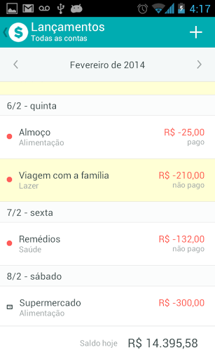
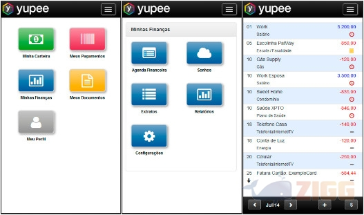
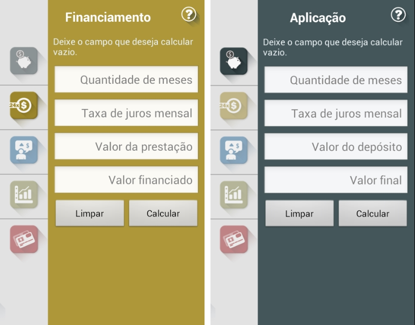

Esse é para quem gosta do controle financeiro de maneira simplificada e na palma das mãos. Além dos relatórios sobre todos os gastos a ferramenta traz boas funções para que você possa categorizar seus gastos e depois ver os gráficos intuitivos e fáceis de entender. Ai você pergunta: "já existem muitos apps de gestão financeira pessoal, qual a diferença?" O Organizze é super intuitivo, os gráficos ajudam a enxergarmos melhor em qual área da nossa vida estamos gastando mais, quais contas são fixas todos os meses e o principal: você pode usar a conta no seu smartphone ou no computador.

Pensando em quem tem tanto boleto a ser pago, a Yuppe foi desenvolvida para se tornar uma agenda de pagamentos. O usuário é notificado pelo próprio aplicativo ou por SMS sobre recebimentos e pagamentos, além de funções como: extratos bancários, sonhos e relatórios das suas movimentações. Não é realizada nenhuma transição pelo app, o usuário apenas alimenta ele com informações. App Calculadora do Cidadão

Essa solução é ótima para simular situações, calcular serviços financeiros, analisar correções de taxas no cartão de crédito e muito mais. Ele é dividido em cinco serviços: aplicação de depósitos regulares, financiamento com prestações fixas, valor futuro de um captal, correção de valores e cartão de crédito. Basta o usuário inserir os dados de valor, datas e quantidades de parcela, por exemplo, e o aplicativo informa quais serão os valores durante o processo.
Tabela Organizador de Tarefas Semanal - Finanças Femininas
Aqui não é exatamente um app que vai acompanhar no celular, mas é uma mão na roda no momento de organizar sua semana. A tabela foi elaborada pela Coach Thaís Roque, do blog Finanças Femininas, aproveite!
Tabela Listas de Supermercado - Finanças Femininas
Não poderia faltar nas nossas dicas uma lista de supermercado! Use o Excel ao seu favor na hora de se preparar para fazer a compra do mês, economizamos mais quando estamos focados no que precisamos na despensa. Mais uma do blog Finanças Femininas em parceria com o site Organize sem Frescuras!